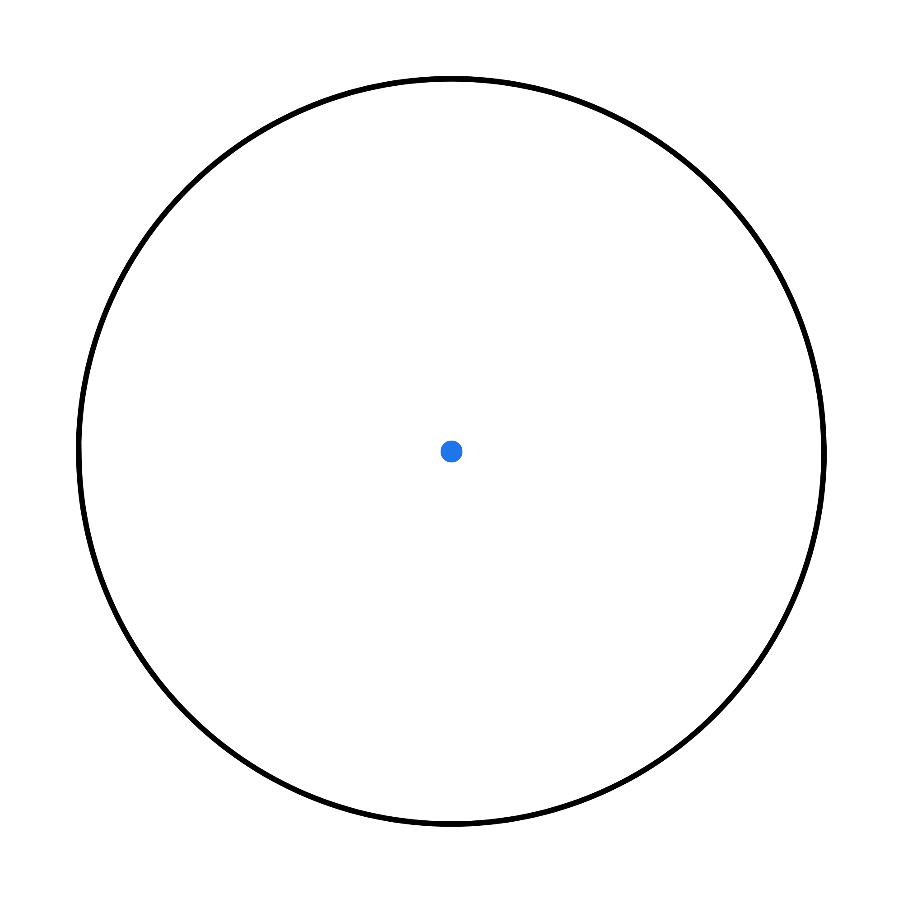

Si chiama circonferenza il luogo geometrico dei punti equidistanti da un punto fisso chiamato centro.
L’equazione di una circonferenza di conseguenza si ottiene ponendo la seguente condizione a un punto \(P(x,y)\)
\(\sqrt {(x-\alpha)^2 + (y-\beta)^2}=r\)
\(\longrightarrow (x-\alpha)^2 + (y-\beta)^2=r^2\)
Dove \(\alpha\) e \(\beta\) sono le coordinate del centro \(C\) e \(r\) è il raggio della circonferenza, ovvero la distanza tra i punti e il centro.
Quindi se il centro della circonferenza coincide con il centro \(\alpha\) e \(\beta\) sono \(0\) e l’equazione risulta:
\[x^2 + y^2=r^2\]
Notiamo che l’equazione della circonferenza è di secondo grado e da essa ricava anche l’equazione in forma implicita nella forma:
\[x^2+y^2+ax+by+c =0\]
Svolgendo i calcoli troviamo che sarà:
\[x^2+y^2-2\alpha x-2 \beta y+ \alpha^2+ \beta^2-r^2=0\]
Da cui ricaviamo i coefficienti numerici \(a\), \(b\) e \(c\):
\(a=-2\alpha\)
\(b = -2 \beta\)
\(c=\alpha^2+\beta^2-r^2\)
L’equazione di una circonferenza si distingue da quella di una conica generica perché rispetta \(3\) condizioni: